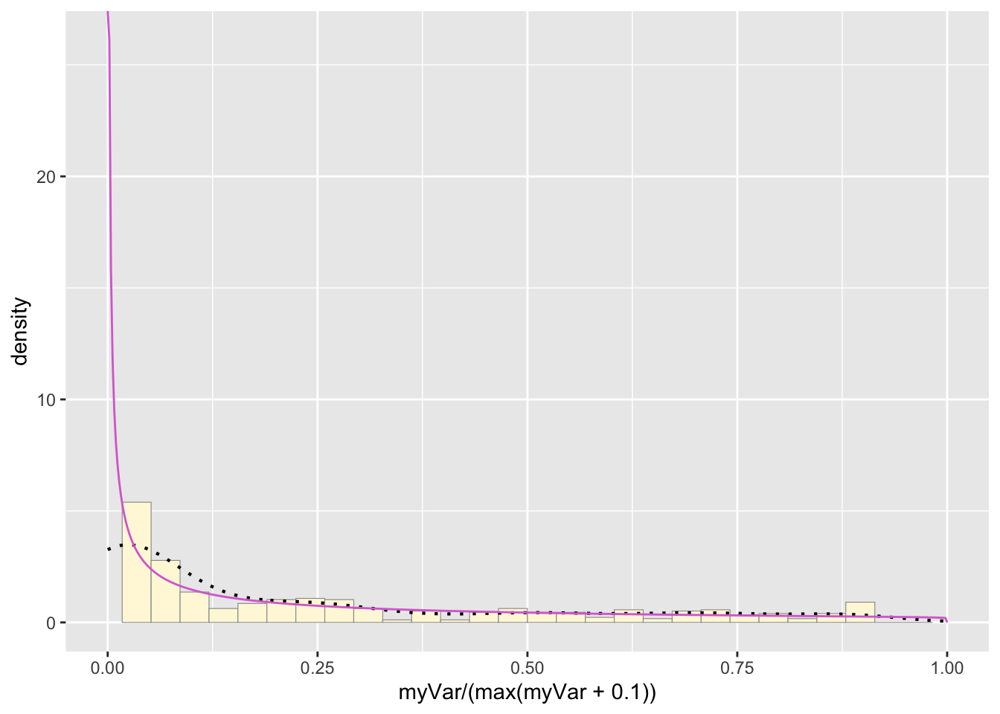
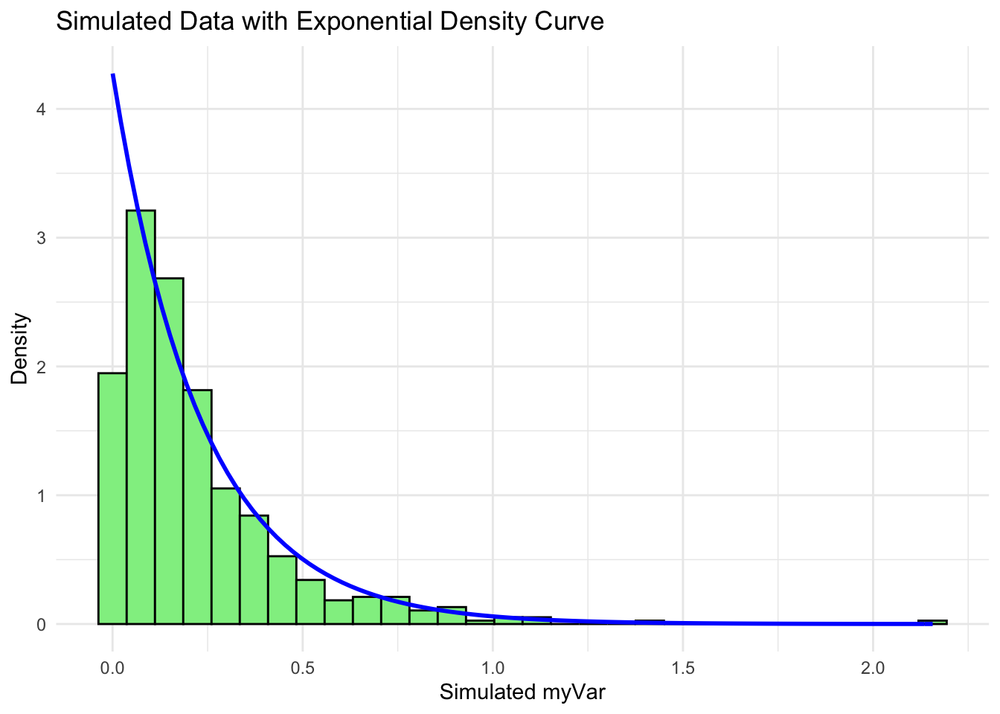

Homework8
2025-03-19
library(ggplot2) # for graphics
library(MASS) # for maximum likelihood estimation##
## Attaching package: 'MASS'## The following object is masked from 'package:dplyr':
##
## selectlibrary(dplyr)Question 1-2:
Read in fake data vector:
# quick and dirty, a truncated normal distribution to work on the solution set
#z <- rnorm(n=3000,mean=0.2)
#z <- data.frame(1:3000,z)
#names(z) <- list("ID","myVar")
#z <- z[z$myVar>0,]
#str(z)
#summary(z$myVar)Read in our own data set:
z <- read.csv("UBO Data - Sheet7.csv",header=TRUE,sep=",")
z <- z %>%
dplyr::select(field_ID, assay_score) %>%
filter(!is.na(assay_score))%>%
mutate(Var = ifelse(assay_score == 0, 0.0001, assay_score))
colnames(z) <- c("ID", "Var", "myVar")
str(z)## 'data.frame': 511 obs. of 3 variables:
## $ ID : chr "Latshaw G17 II" "#28 52 " "G17" "Breeder '21 S2-24" ...
## $ Var : num 0 0 0 0.2 0.85 0.22 0.82 0.19 0.95 0.19 ...
## $ myVar: num 0.0001 0.0001 0.0001 0.2 0.85 0.22 0.82 0.19 0.95 0.19 ...summary(z)## ID Var myVar
## Length:511 Min. :0.0000 Min. :0.00010
## Class :character 1st Qu.:0.0100 1st Qu.:0.01005
## Mode :character Median :0.0800 Median :0.08000
## Mean :0.2336 Mean :0.23367
## 3rd Qu.:0.3450 3rd Qu.:0.34500
## Max. :1.0000 Max. :1.00000Plot histogram of data:
p1 <- ggplot(data=z, aes(x=myVar, y=..density..)) +
geom_histogram(color="grey60",fill="cornsilk",size=0.2) ## Warning: Using `size` aesthetic for lines was deprecated in ggplot2 3.4.0.
## ℹ Please use `linewidth` instead.
## This warning is displayed once every 8 hours.
## Call `lifecycle::last_lifecycle_warnings()` to see where this warning was
## generated.print(p1)## Warning: The dot-dot notation (`..density..`) was deprecated in ggplot2 3.4.0.
## ℹ Please use `after_stat(density)` instead.
## This warning is displayed once every 8 hours.
## Call `lifecycle::last_lifecycle_warnings()` to see where this warning was
## generated.## `stat_bin()` using `bins = 30`. Pick better value with `binwidth`.
Add empirical density curve:
p1 <- p1 + geom_density(linetype="dotted",size=0.75)
print(p1)## `stat_bin()` using `bins = 30`. Pick better value with `binwidth`.
Get maximum likelihood parameters for normal
normPars <- fitdistr(z$myVar,"normal")
print(normPars)## mean sd
## 0.233664971 0.297085812
## (0.013142303) (0.009293011)str(normPars)## List of 5
## $ estimate: Named num [1:2] 0.234 0.297
## ..- attr(*, "names")= chr [1:2] "mean" "sd"
## $ sd : Named num [1:2] 0.01314 0.00929
## ..- attr(*, "names")= chr [1:2] "mean" "sd"
## $ vcov : num [1:2, 1:2] 1.73e-04 0.00 0.00 8.64e-05
## ..- attr(*, "dimnames")=List of 2
## .. ..$ : chr [1:2] "mean" "sd"
## .. ..$ : chr [1:2] "mean" "sd"
## $ n : int 511
## $ loglik : num -105
## - attr(*, "class")= chr "fitdistr"normPars$estimate["mean"] # note structure of getting a named attribute## mean
## 0.233665Plot normal probability density:
meanML <- normPars$estimate["mean"]
sdML <- normPars$estimate["sd"]
xval <- seq(0,max(z$myVar),len=length(z$myVar))
stat <- stat_function(aes(x = xval, y = ..y..), fun = dnorm, colour="red", n = length(z$myVar), args = list(mean = meanML, sd = sdML))
p1 + stat## `stat_bin()` using `bins = 30`. Pick better value with `binwidth`.Plot exponential probability density:
expoPars <- fitdistr(z$myVar,"exponential")
rateML <- expoPars$estimate["rate"]
stat2 <- stat_function(aes(x = xval, y = ..y..), fun = dexp, colour="blue", n = length(z$myVar), args = list(rate=rateML))
p1 + stat + stat2## `stat_bin()` using `bins = 30`. Pick better value with `binwidth`.
Plot uniform probability density:
stat3 <- stat_function(aes(x = xval, y = ..y..), fun = dunif, colour="darkgreen", n = length(z$myVar), args = list(min=min(z$myVar), max=max(z$myVar)))
p1 + stat + stat2 + stat3## `stat_bin()` using `bins = 30`. Pick better value with `binwidth`.Plot gamma probability density:
gammaPars <- fitdistr(z$myVar,"gamma")## Warning in densfun(x, parm[1], parm[2], ...): NaNs produced
## Warning in densfun(x, parm[1], parm[2], ...): NaNs produced
## Warning in densfun(x, parm[1], parm[2], ...): NaNs produced
## Warning in densfun(x, parm[1], parm[2], ...): NaNs produced
## Warning in densfun(x, parm[1], parm[2], ...): NaNs produced
## Warning in densfun(x, parm[1], parm[2], ...): NaNs produced
## Warning in densfun(x, parm[1], parm[2], ...): NaNs produced
## Warning in densfun(x, parm[1], parm[2], ...): NaNs produced
## Warning in densfun(x, parm[1], parm[2], ...): NaNs produced
## Warning in densfun(x, parm[1], parm[2], ...): NaNs produced
## Warning in densfun(x, parm[1], parm[2], ...): NaNs produced
## Warning in densfun(x, parm[1], parm[2], ...): NaNs produced
## Warning in densfun(x, parm[1], parm[2], ...): NaNs produced
## Warning in densfun(x, parm[1], parm[2], ...): NaNs produced
## Warning in densfun(x, parm[1], parm[2], ...): NaNs producedshapeML <- gammaPars$estimate["shape"]
rateML <- gammaPars$estimate["rate"]
stat4 <- stat_function(aes(x = xval, y = ..y..), fun = dgamma, colour="brown", n = length(z$myVar), args = list(shape=shapeML, rate=rateML))
p1 + stat + stat2 + stat3 + stat4## `stat_bin()` using `bins = 30`. Pick better value with `binwidth`.Plot beta probability density:
pSpecial <- ggplot(data=z, aes(x=myVar/(max(myVar + 0.1)), y=..density..)) +
geom_histogram(color="grey60",fill="cornsilk",size=0.2) +
xlim(c(0,1)) +
geom_density(size=0.75,linetype="dotted")
betaPars <- fitdistr(x=z$myVar/max(z$myVar + 0.1),start=list(shape1=1,shape2=2),"beta")## Warning in densfun(x, parm[1], parm[2], ...): NaNs produced
## Warning in densfun(x, parm[1], parm[2], ...): NaNs produced
## Warning in densfun(x, parm[1], parm[2], ...): NaNs produced
## Warning in densfun(x, parm[1], parm[2], ...): NaNs produced
## Warning in densfun(x, parm[1], parm[2], ...): NaNs produced
## Warning in densfun(x, parm[1], parm[2], ...): NaNs produced
## Warning in densfun(x, parm[1], parm[2], ...): NaNs produced
## Warning in densfun(x, parm[1], parm[2], ...): NaNs produced
## Warning in densfun(x, parm[1], parm[2], ...): NaNs producedshape1ML <- betaPars$estimate["shape1"]
shape2ML <- betaPars$estimate["shape2"]
statSpecial <- stat_function(aes(x = xval, y = ..y..), fun = dbeta, colour="orchid", n = length(z$myVar), args = list(shape1=shape1ML,shape2=shape2ML))
pSpecial + statSpecial## `stat_bin()` using `bins = 30`. Pick better value with `binwidth`.## Warning: Removed 2 rows containing missing values or values outside the scale range
## (`geom_bar()`).
Question 3:
How do the two histogram profiles compare? Do you think the model is doing a good job of simulating realistic data that match your original measurements? Why or why not?
We modified our own data set to have the variables ‘ID’ ‘myVar’, so we did not have to comment out all of code from the fake data set. Our data set represents over 500 hygienic behavior tests conducted on Vermont honey bee colonies between 2022-2024. Test scores range from 0 to 1 and represent the proportion of infected larvae removed within a 2 hr period.
The histogram of our own data set differs from the fake data set due to its dramatic right-skewed shape, where most colonies scored 0 and the mean score was 0.23. The probability density that best fits our data set upon first glance would be the exponential or gamma distributions. However, upon simulating the data sets from both densities below and comparing with our original data set, it looks like the exponential density fits much better since the shape of the exponential distribution is right-skewed with a long tail.
Question 4:
gammaPars <- fitdistr(z$myVar, "gamma")## Warning in densfun(x, parm[1], parm[2], ...): NaNs produced
## Warning in densfun(x, parm[1], parm[2], ...): NaNs produced
## Warning in densfun(x, parm[1], parm[2], ...): NaNs produced
## Warning in densfun(x, parm[1], parm[2], ...): NaNs produced
## Warning in densfun(x, parm[1], parm[2], ...): NaNs produced
## Warning in densfun(x, parm[1], parm[2], ...): NaNs produced
## Warning in densfun(x, parm[1], parm[2], ...): NaNs produced
## Warning in densfun(x, parm[1], parm[2], ...): NaNs produced
## Warning in densfun(x, parm[1], parm[2], ...): NaNs produced
## Warning in densfun(x, parm[1], parm[2], ...): NaNs produced
## Warning in densfun(x, parm[1], parm[2], ...): NaNs produced
## Warning in densfun(x, parm[1], parm[2], ...): NaNs produced
## Warning in densfun(x, parm[1], parm[2], ...): NaNs produced
## Warning in densfun(x, parm[1], parm[2], ...): NaNs produced
## Warning in densfun(x, parm[1], parm[2], ...): NaNs produced# Extract the shape and rate parameters from the fit
shapeML <- gammaPars$estimate["shape"]
rateML <- gammaPars$estimate["rate"]
# Simulate a new dataset with the same length as your original data using the fitted parameters
simulated_data <- rgamma(length(z$myVar), shape = shapeML, rate = rateML)
# Create the original data histogram with probability density curve
p3 <- ggplot(data = data.frame(x = z$myVar), aes(x = x)) +
geom_histogram(aes(y = ..density..), bins = 30, fill = "skyblue", color = "black") +
stat_function(aes(x = x, y = ..y..), fun = dgamma, args = list(shape = shapeML, rate = rateML),
colour = "brown", size = 1) +
labs(title = "Original Data with Gamma Density Curve", x = "myVar", y = "Density") +
theme_minimal()
# Create the simulated data histogram with probability density curve
p4 <- ggplot(data = data.frame(x = simulated_data), aes(x = x)) +
geom_histogram(aes(y = ..density..), bins = 30, fill = "lightgreen", color = "black") +
stat_function(aes(x = x, y = ..y..), fun = dgamma, args = list(shape = shapeML, rate = rateML),
colour = "brown", size = 1) +
labs(title = "Simulated Data with Gamma Density Curve", x = "Simulated myVar", y = "Density") +
theme_minimal()
# Display both plots
p3p4
expoPars <- fitdistr(z$myVar, "exponential")
# Extract the rate parameter from the fit
rateML <- expoPars$estimate["rate"]
# Simulate a new dataset with the same length as your original data using the fitted rate
simulated_data_exp <- rexp(length(z$myVar), rate = rateML)
# Create the original data histogram with the exponential density curve
p5 <- ggplot(data = data.frame(x = z$myVar), aes(x = x)) +
geom_histogram(aes(y = ..density..), bins = 30, fill = "skyblue", color = "black") +
stat_function(aes(x = x, y = ..y..), fun = dexp, args = list(rate = rateML),
colour = "blue", size = 1) +
labs(title = "Original Data with Exponential Density Curve", x = "myVar", y = "Density") +
theme_minimal()
# Create the simulated data histogram with the exponential density curve
p6 <- ggplot(data = data.frame(x = simulated_data_exp), aes(x = x)) +
geom_histogram(aes(y = ..density..), bins = 30, fill = "lightgreen", color = "black") +
stat_function(aes(x = x, y = ..y..), fun = dexp, args = list(rate = rateML),
colour = "blue", size = 1) +
labs(title = "Simulated Data with Exponential Density Curve", x = "Simulated myVar", y = "Density") +
theme_minimal()
# Display both plots
p5p6